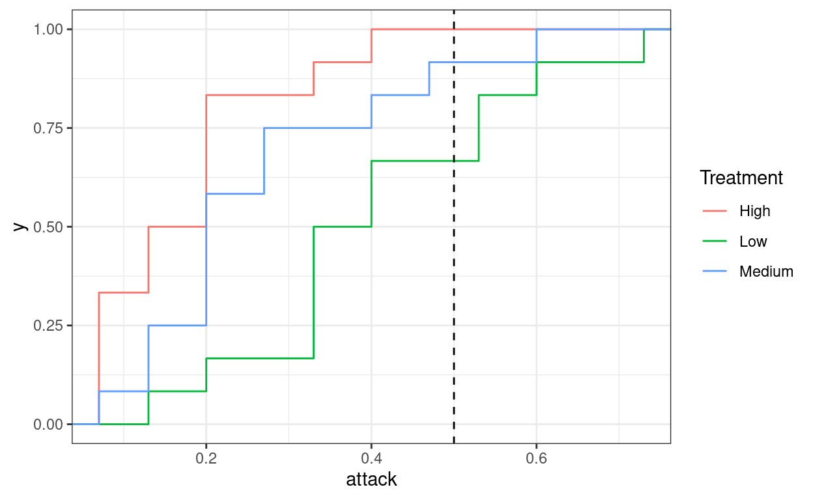
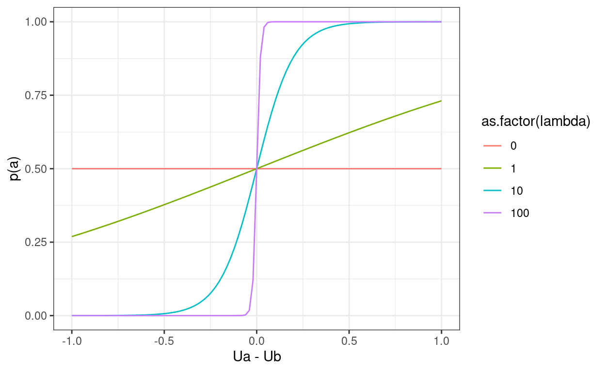
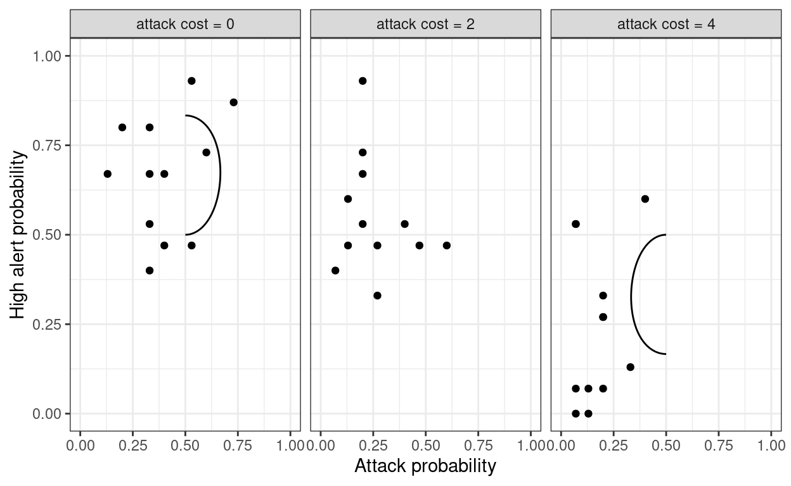

A Bayesian implementation of some econometrics in Holt, Sahu, and Smith (2022)
One of the things I really like about quantal response equilibrium (QRE) is that it is right in the intersection of game theory, behavioral economics, and statistics. The game theory part should be pretty clear, because QRE is an equilibrium concept for games. It draws from behavioral economics because one can interpret the imprecision of players’ decisions as bounded rationality, which is empirically very relevant. The statistical part comes in because it permits the use of a likelihood function in estimating a model’s parameters, where Nash equilibrium sometimes does not (for example, when a player has a strictly dominant strategy).
As I have begun writing in this area, and was fortunate enough to attend the 25+ years of Quantal Response Equilibrium Conference at Caltech in March this year, I thought I’d write a quick post about what QRE is, and show you how I am estimating its parameters using Bayesian techniques. Of course, if you are looking for my full working paper on how to do this, you should click here, but what follows is a more introductory treatment of the process. I have also had many questions from people about how to get started with this, so I suppose I can direct them here from now on.
A recent paper in Southern Economic Journal highlights one of the interesting features of QRE, in that it often predicts the direction in which play by human subjects will depart from Nash equilibrium. Here is the full citation with a link to the published paper:
Holt, Charles A., Ricky Sahu, and Angela M. Smith. “An experimental analysis of risk effects in attacker‐defender games.” Southern Economic Journal (2022).
henceforth HSS.
Here are the payoff tables of HSS’ three treatments:
library(tidyverse)
library(readxl)
payoffs<-list()
payoffs$low<-list()
payoffs$low$Urow<-rbind(c(1,1),c(4,-2))
payoffs$low$Ucol<-rbind(c(1,0),c(1,6)) %>% t()
payoffs$medium<-list()
payoffs$medium$Urow<-rbind(c(1,1),c(4,-2))
payoffs$medium$Ucol<-rbind(c(1,-2),c(1,4)) %>% t()
payoffs$high<-list()
payoffs$high$Urow<-rbind(c(1,1),c(4,-2))
payoffs$high$Ucol<-rbind(c(1,-4),c(1,2)) %>% t()
#payoffs %>% print()
for (ii in 1:length(payoffs)) {
pp<-payoffs[[ii]]
tab<-paste(pp$Urow,",", pp$Ucol %>% t()) %>% matrix(nrow=2)
rownames(tab)<-c("High alert","Low alert")
colnames(tab)<-c("Wait","Attack")
print(paste(names(payoffs)[ii],"alert cost ------------------"))
knitr::kable(tab) %>% print()
print("")
}[1] "low alert cost ------------------"
| |Wait |Attack |
|:----------|:-----|:------|
|High alert |1 , 1 |1 , 0 |
|Low alert |4 , 1 |-2 , 6 |
[1] ""
[1] "medium alert cost ------------------"
| |Wait |Attack |
|:----------|:-----|:------|
|High alert |1 , 1 |1 , -2 |
|Low alert |4 , 1 |-2 , 4 |
[1] ""
[1] "high alert cost ------------------"
| |Wait |Attack |
|:----------|:-----|:------|
|High alert |1 , 1 |1 , -4 |
|Low alert |4 , 1 |-2 , 2 |
[1] ""Note that the row player’s payoff do not change over these three treatments. That is, from the row player’s perspective, their part of the payoff matrix is always:
payoffs$low$Urow [,1] [,2]
[1,] 1 1
[2,] 4 -2Because this game has a unique Nash equilibrium in mixed strategies, Nash equilibrium predicts that the column player’s probability of choosing “Attack” should not change between treatments.
What?
I just showed you that the row player’s payoffs remained the same, but that tells us something about the column player? To see why, let’s calculate the mixed strategy Nash equilibrium strategy for the column player, which must set the probability of attacking, call this \(p_A\), such that the row player is indifferent between being on low and high alert:
\[ \begin{aligned} U_\text{High}&=1p_A+1(1-p_A)=1\\ U_\text{Low}&=-2p_A+4(1-p_A)=4-6p_A\\ \text{indifference}\implies 1&=4-6p_A\\ 6p_A&=3\\ p_A=\frac{1}{2} \end{aligned} \]
Note here that we did not need to look at the column player’s payoffs in making this calculation, but we have calculated the column player’s mixed strategy! This is a property of all mixed strategy Nash predictions: if you only change the payoffs of one player, that player should not adjust their strategy,
So what happens in reality? The data for this experiment are are available at the group level in the paper (thanks, authors!), so one can just copy and paste them into a spreadsheet and then import them right into R:
d<-read_excel("HSSdata.xls",sheet="Final15")
colnames(d)<-c("Session","Treatment","PairID","attack","alert")
d<-(
d
%>% mutate(cost = ifelse(Treatment=="Low",0,
ifelse(Treatment=="Medium",2,4)))
)
d %>% sample_n(10) %>% knitr::kable()| Session | Treatment | PairID | attack | alert | cost |
|---|---|---|---|---|---|
| ter7 | Medium | 2022-01-07 | 0.27 | 0.47 | 2 |
| ter8 | Low | 2022-05-11 | 0.13 | 0.67 | 0 |
| ter7 | Medium | 2022-04-10 | 0.27 | 0.33 | 2 |
| adnf10 | High | 2022-04-10 | 0.07 | 0.07 | 4 |
| ter9 | High | 2022-05-11 | 0.13 | 0.00 | 4 |
| ter9 | High | 2022-04-10 | 0.33 | 0.13 | 4 |
| ter7 | Medium | 2022-06-12 | 0.40 | 0.53 | 2 |
| adnf9 | Medium | 2022-02-08 | 0.20 | 0.67 | 2 |
| adnf9 | Medium | 2022-01-07 | 0.20 | 0.93 | 2 |
| ter8 | Low | 2022-06-12 | 0.33 | 0.80 | 0 |
Here I (and HSS) am focusing on the final 15 rounds of play, as earlier rounds may be less likely to have equilibrium play.
But when we look at the probability that each player attacks, broken down by treatment, we see that higher attack costs result in lower attack probabilities.
(
ggplot(d,aes(attack,color=Treatment))
+stat_ecdf()+theme_bw()
+geom_vline(xintercept=1/2,linetype="dashed")
)
Here I am plotting the empirical cumulative density function of the fraction of times each column player chose “Attack”. Looking at this, the red line (high attack cost) is at least as far to the left of the blue line (medium attack cost), which itself is almost always to the left of the green line (low attack cost). That is, attack probabilities are increasing as attack costs go down. This is quite intuitive to anyone who has taken a principles course: if you raise the price (cost of attacking), you are less likely to buy the good (attack), but it is not predicted by Nash equilibrium.
Fortunately, Nash equilibrium is not the only tool we have to work with. While it seems intuitively plausible that people should attack less when the attack cost goes up, Nash predicts that the opponent (row player) will adjust their strategy to keep the column player indifferent.
QRE replaces the Nash equilibrium’s best response function with a “probabilistic best response”, or “noisy best response” function. The idea is that while players respond to their payoffs, they don’t do it perfectly. In particular, we will assume that players are more likely to take actions that yield higher expected utility, but they don’t necessarily always choose the action with the highest expected utility. This is behaviorally plausible because boundedly rational players may correctly evaluate their expected utilities on average, but they make mistakes in their calculations.
A popular parameterization of a probabilistic best response function is logit choice, also called softmax:
\[ p(a\mid u)=\frac{\exp(\lambda u_a)}{\sum_j\exp(\lambda u_j)} \]
where \(ui\) is a vector of expected payoffs, \(\u_a\) is the expected payoff of choosing action \(a\), and \(\lambda\geq 0\) is the choice precision parameter. When there are only two actions to choose from, this becomes:
\[ \begin{aligned} p(a\mid u_a,u_b)&=\frac{\exp(\lambda u_a)}{\exp(\lambda u_a)+\exp(\lambda u_b)}\\ &=\left(1+\exp(-\lambda(u_a-u_b))\right)^{-1} \end{aligned} \]
and it is also useful to express this in logit form:
\[ \log p_a-\log p_b=\lambda(u_a-u_b) \] which is true for an arbitrary number of actions. This is useful because it shows how players respond to utility differences: when \(u_a>u_b\) players will be more likely to choose \(a\) than \(b\). Increasing this difference will make it even more likely, and so will increasing the choice precision parameter \(\lambda\). Furthermore, this model nests two important responses to payoffs that are empirically interesting:
lambda<-c(0,1,10,100)
DU<-seq(-1,1,length=101)
pltThis<-tibble()
for (ll in lambda) {
tmp<-(tibble(DU = DU,lambda = ll)
%>% mutate(pA = 1/(1+exp(-lambda*DU)))
)
pltThis<-rbind(pltThis,tmp)
}
(
ggplot(pltThis,aes(x=DU,y=pA,color=as.factor(lambda)))
+geom_path()
+xlab("Ua - Ub")+ylab("p(a)")+theme_bw()
)
So what we have up to this point is a replacement for the best response function. What we need to do now is to tie it in with the fixed point condition of Nash equilibrium, where we impose that the row player’s best response to the column player’s strategy is the row player’s strategy. Likewise for the column player.
For quantal response equilibrium, this means that the row player’s probabilistic best response to the column player’s strategy is their own mixed strategy, so using the logit specification:
\[ \begin{aligned} \log p_H-\log p_L&=\lambda\left[u_H-u_L\right]\\ &=\lambda\left[1-(4-6p_A)\right]\\ &=\lambda(6p_A-3) \end{aligned} \]
and noting that \(p_L=1-p_L\), this becomes:
\[ \log(p_H)-\log(1-p_H)=\lambda(6p_A-3) \] Similarly for the column player, we need that:
\[ \begin{aligned} \log(p_A)-\log(1-p_A)&=\lambda\left[u_A-u_W\right]\\ &=\lambda\left[6(1-p_H)-c-1\right] \end{aligned} \] where \(c\in\{0,2,4\}\) is the relevant attack cost for that treatment.
Putting these together, we have two equations in two unknowns, which written as zeros becomes: \[ \begin{aligned} 0&=\log (p_H)-\log (1-p_H)-\lambda(2-5p_A)\\ 0&=\log(p_A)-\log(1-p_A)-\lambda\left[6(1-p_H)-c-1\right] \end{aligned} \] which is not solvable by hand, but fortunately a computer can do it for us. While solving the above directly will probably work just fine for this application, it is usually better for stability reasons to solve the problem in logs or logits directly, then transform back into probabilities:
# Objective function: minimize the difference between the RHS of the above equations and zero
ObjFun<-function(lp,c,lambda) {
p<-1/(1+exp(-lp)) # convert logit(p) to probabilities
x<-c(
lp[1]-lambda*(6*p[2]-3),
lp[2]-lambda*(6*(1-p[1])-c-1)
)
sum(x^2)
}
# Equilibrium calculation: minimize the objective function given c and lambda
QRE<-function(c,lambda) {
par<-optim(c(0,0),function(p) ObjFun(p,c,lambda))$par
1/(1+exp(-par))
}
QRE(0,1)[1] 0.7228955 0.6598094So now we can trace out the QRE (as a function of choice precision \(\lambda\)) for the three treatments:
QREdata<-tibble()
lambda<-1/(1-seq(0,0.99999,length=100))-1
for (cc in c(0,2,4)) {
for (ll in lambda) {
p<-QRE(cc,ll)
tmp<-tibble(pH=p[1],pA=p[2],lambda=ll,c=cc,ctxt = paste("attack cost =",cc))
QREdata<-rbind(QREdata,tmp)
}
}
head(QREdata)# A tibble: 6 x 5
pH pA lambda c ctxt
<dbl> <dbl> <dbl> <dbl> <chr>
1 0.5 0.5 0 0 attack cost = 0
2 0.500 0.505 0.0102 0 attack cost = 0
3 0.500 0.510 0.0206 0 attack cost = 0
4 0.501 0.516 0.0312 0 attack cost = 0
5 0.501 0.521 0.0421 0 attack cost = 0
6 0.502 0.526 0.0532 0 attack cost = 0d<-d %>% mutate(ctxt =paste("attack cost =",cost) )
(
ggplot(data=QREdata,aes(x=pA,y=pH))
+geom_path()
+theme_bw()
+geom_point(data=d,aes(x=attack,y=alert))
+facet_wrap(~ctxt)
+xlab("Attack probability")
+ylab("High alert probability")
+xlim(c(0,1))+ylim(c(0,1))
) 
Note that for the medium attack cost, there appears to be no QRE prediction. This is because \((p_H,p_A)=(0.5,0.5)\) for all \(\lambda\) in this case. Risk-neutral QRE provides no additional predictions beyone Nash equilibrium (or coin-flipping, for that matter) in this case.
Let’s estimate the choice precision parameter \(\lambda\). To do this, we will first need to specify the likelihood. This is fairly straightforward, as the model specifies a probability distribution over actions:
\[ \begin{aligned} \mathcal p(y\mid \lambda)&=\prod_{c\in\{0,2,4\}}p_A^c(\lambda)^{A_c}(1-p_A^c(\lambda))^{N_c-A_c}p_H^c(\lambda)^{H_c}(1-p_H^c(\lambda))^{N_c-H_c}\\ \log p(y\mid\lambda)&=\sum_{c\in\{0,2,4\}}\left[ A_c\log(p_A^c(\lambda))+(N_c-A_c)\log(1-p^c_A(\lambda)) +H_c\log(p_H^c(\lambda))+(N_c-H_c)\log(1-p^c_H(\lambda)) \right] \end{aligned} \] where \(N_c\) is the number of rounds played in treatment \(c\), \(A_c\) is the number of times “Attack” was played in treatment \(c\), and \(H_c\) is the number of times “High alert” was played in period \(c\).
While this is the easy part, the part I found not so easy in implementing this was to actually solve for the QRE. Remember that we cannot do this by hand, so we will need to pass instructions to Stan on how to do this. Fortunately Stan has a nonlinear equation solver, so in principle this is doable. What I found in practice in writing my working paper (see above), is that if you are willing to do a bit of math beforehand, you can make the problem a lot simpler for Stan to compute. I will not go into this here, but I encourage you to learn about the predictor-corrector algorithm in:
Turocy, Theodore L. “Computing sequential equilibria using agent quantal response equilibria.” Economic Theory 42, no. 1 (2010): 255-269.
What I ended up doing in my working paper was just using corrector steps (as my problem was relatively stable).
But for now, let’s make Stan do all of the heavy lifting, because this problem is a relatively quick one to solve, particularly since all of the information needed to compute the likelihood is in the following three-row table:
dsummary<-(d
%>% group_by(cost)
%>% summarize(H = sum(alert*15),
A = sum(attack*15),
N = n()*15 # Each player played 15 rounds in the final 15 rounds
)
)
dsummary %>% knitr::kable()| cost | H | A | N |
|---|---|---|---|
| 0 | 120.15 | 72.60 | 180 |
| 2 | 99.00 | 47.10 | 180 |
| 4 | 43.05 | 31.05 | 180 |
(yes, I’m noting some rounding errors here. Let’s just go with it).
Here is the Stan program I wrote to estimate this QRE:
functions {
/*
QRE fixed point condition
This function is equal to zero when evaluated at the logit of the QRE probabilities
Stan requires that functions passed to the algebra solver have a certain signature, so
I had to add in the x_r and x_i inputs to get it to work, even though I don't
need these
*/
vector QREFixedPoint(vector lp, vector pars, data real[] x_r, data int[] x_i) {
vector[2] z;
real lambda = pars[1]; // lambda is the first element of pars
real cost = pars[2]; // attack cost is the second element of pars
// convert logit probabilities into actual probabilities
vector[2] p = 1.0 ./(1.0+exp(-lp));
// fixed point condition for row player
z[1] = lp[1]-lambda*(6*p[2]-3);
// fixed point condition for column player
z[2] = lp[2]-lambda*(6*(1-p[1])-cost-1);
return z;
}
}
data {
int<lower=0> n; // number of rows of data
vector[n] cost; // attack cost
vector[n] H; // number of times High Alert is played in a treatment
vector[n] A; // Number of times Attack is played
vector[n] N; // total number of actions played
vector[2] prior_lambda; // prior for lambda (lognormal)
}
transformed data {
// The algebra solver needs to have some data to pass to it, so let's greate some
real x_r[1] = {3.14};
int x_i[1] = {42};
}
parameters {
// logit choice precision parameter
real<lower=0> lambda;
}
transformed parameters {
/* sometimes we need to store some intermediate values from our calculations.
In particular here, I want to store the model's predictions to plot later.
I also store the log-likelihood, as it is useful for model evaluation ( although
I', not doing one here).
*/
vector[n] log_like;
vector[2] predictions[n];
for (tt in 1:n) {
// set up some inputs for the fixed point calculation
vector[2] lp0 = to_vector({0.0,0.0}); // initial guess
vector[2] pars = to_vector({lambda,cost[tt]}); // parameters to pass to solver
// solve QRE
vector[2] lp = algebra_solver(QREFixedPoint,lp0,pars,x_r,x_i);
// convert logit probabilities to actual probabilities
vector[2] p = 1.0 ./(1+exp(-lp));
predictions[tt] = p;
// likelihood contribution
log_like[tt]= H[tt]*log(p[1])+(N[tt]-H[tt])*log(1.0-p[1])
+ A[tt]*log(p[2])+(N[tt]-A[tt])*log(1.0-p[2]);
}
}
model {
// prior
lambda ~ lognormal(prior_lambda[1],prior_lambda[2]);
// likelihood contribution
target+=log_like;
}And then we just need to get our data into the raight shape for Stan to understand it:
library(rstan)
options(mc.cores = parallel::detectCores())
rstan_options(auto_write = TRUE)
StanData<-list(
n = dim(dsummary)[1],
cost = dsummary$cost,
A = dsummary$A,
H = dsummary$H,
N = dsummary$N,
prior_lambda = c(0,1)
)
Fit<-stan("HSS_QREEstimator.stan",data=StanData)
summary(Fit)$summary %>% knitr::kable() | mean | se_mean | sd | 2.5% | 25% | 50% | 75% | 97.5% | n_eff | Rhat | |
|---|---|---|---|---|---|---|---|---|---|---|
| lambda | 1.0670076 | 0.0059422 | 0.2137486 | 0.7220692 | 0.9204513 | 1.0409649 | 1.1853911 | 1.5545090 | 1293.948081 | 1.0014610 |
| log_like[1] | -261.6190865 | 0.0099209 | 0.3598706 | -261.9810071 | -261.8953710 | -261.7232159 | -261.4495853 | -260.6983400 | 1315.810402 | 1.0015946 |
| log_like[2] | -249.5329850 | 0.0000000 | 0.0000000 | -249.5329850 | -249.5329850 | -249.5329850 | -249.5329850 | -249.5329850 | 2.003004 | 0.9989995 |
| log_like[3] | -195.7950590 | 0.0259065 | 1.0000421 | -198.6174376 | -196.0307494 | -195.4062060 | -195.1584202 | -195.0897782 | 1490.107677 | 1.0009788 |
| predictions[1,1] | 0.7275373 | 0.0007128 | 0.0258738 | 0.6731964 | 0.7108820 | 0.7285241 | 0.7455747 | 0.7750579 | 1317.572410 | 1.0014121 |
| predictions[1,2] | 0.6558632 | 0.0002583 | 0.0093302 | 0.6326351 | 0.6511664 | 0.6580500 | 0.6629013 | 0.6666792 | 1304.276919 | 1.0015406 |
| predictions[2,1] | 0.5000000 | NaN | 0.0000000 | 0.5000000 | 0.5000000 | 0.5000000 | 0.5000000 | 0.5000000 | NaN | NaN |
| predictions[2,2] | 0.5000000 | NaN | 0.0000000 | 0.5000000 | 0.5000000 | 0.5000000 | 0.5000000 | 0.5000000 | NaN | NaN |
| predictions[3,1] | 0.2724627 | 0.0007128 | 0.0258738 | 0.2249421 | 0.2544253 | 0.2714759 | 0.2891180 | 0.3268036 | 1317.572410 | 1.0014121 |
| predictions[3,2] | 0.3441368 | 0.0002583 | 0.0093302 | 0.3333208 | 0.3370987 | 0.3419500 | 0.3488336 | 0.3673649 | 1304.276919 | 1.0015406 |
| lp__ | -706.9669551 | 0.0196114 | 0.7864392 | -709.2127305 | -707.1427199 | -706.6617103 | -706.4689288 | -706.4151604 | 1608.102455 | 1.0006512 |
My mean estimate of \(\lambda=1.053\) is near enough (e.g. within much less of a standard deviation) to the paper’s maximum likelihood estimate of \(\lambda = 0.9782 \ (0.1618)\). This should not be too surprising, because with 180 decisions per treatment, the likelihood will be influencing my results much more than the prior.
So why do I bother to implement my work using Bayesian techniques when MLE often works just fine? There are few reasons. One is that not relevant here is that a lot of my work involves handling unobservable heterogeneity, which is really easy to implement in Bayes. But another benefit is that once you have draws from the posterior distribution of your parameteres (in this case just \(\lambda\)), you can easily simulate the posterior distribution of predictions of the model. For this example, I did this directly in the “transformed parameters” block of my Stan code, which among other things calculates the QRE choice probabilities. What if we wanted to show these predictions in a table, including an expression of uncertainty. In a frequentist MLE framework, we would have to do something like:
On the other hand, with the posterior simulation in hand, we can just report the mean and standard deviation of our simulated variables, which Stan nicely calculated for us in the summary table above. Note that since the QRE for medium attack cost is always \(p=(0.5,0.5)\) for all \(\lambda\), there is no uncertainty about the model’s predictions, even becore we estimate the model.